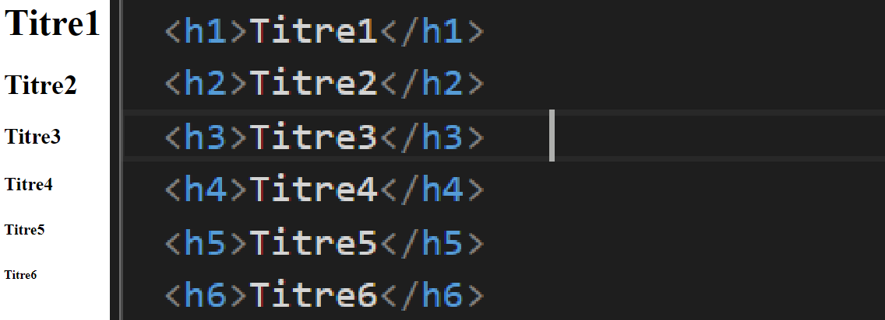
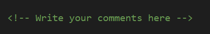
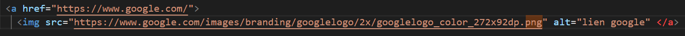
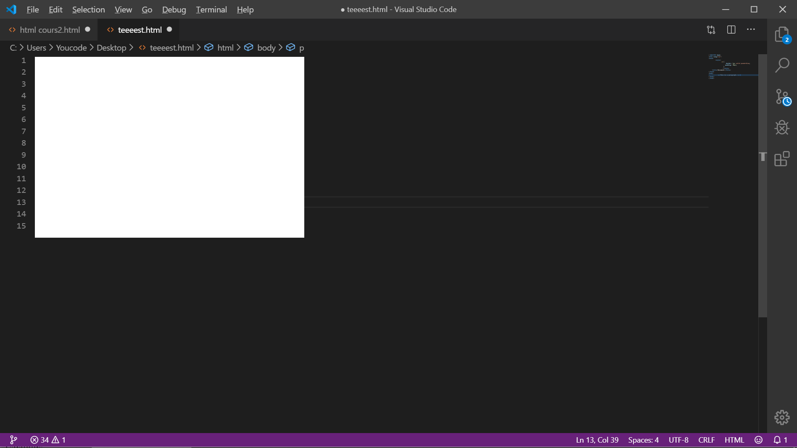

Il s'agit de langages informatiques qui permettent de créer des sites web.
Tous les sites web sont basés sur ces langages, ils sont incontournables
et universels aujourd'hui. Ils sont à la base même du Web. Le langage HTML
a été inventé par un certain Tim Berners-Lee en 1991…
Tim Berners-Lee suit encore aujourd'hui avec attention l'évolution du Web.
Il a créé le World Wide Web Consortium (W3C) qui définit les nouvelles versions
des langages liés au Web. Il a par ailleurs créé plus récemment la World Wide Web
Foundation qui analyse et suit l'évolution du Web.
HTML et CSS : deux langages pour créer un site web
Pour créer un site web, on doit donner des instructions à l'ordinateur. Il ne suffit pas simplement de taper le texte qui devra
figurer dans le site (comme on le ferait dans un traitement de texte Word, par exemple), il faut aussi indiquer où placer ce texte,
insérer des images, faire des liens entre les pages, etc.
Les rôles de HTML et CSS
Pour expliquer à l'ordinateur ce que vous voulez faire, il va falloir utiliser un langage qu'il comprend.
Et c'est là que les choses se corsent, parce qu'il va falloir apprendre deux langages !
HTML (HyperText Markup Language) : il a fait son apparition dès 1991 lors du
lancement du Web. Son rôle est de gérer et organiser le contenu. C'est donc en
HTML que vous écrirez ce qui doit être affiché sur la page : du texte, des liens,
des images… Vous direz par exemple : « Ceci est mon titre, ceci est mon menu,
voici le texte principal de la page, voici une image à afficher, etc. ».
CSS (Cascading Style Sheets, aussi appelées Feuilles de style) :
le rôle du CSS est de gérer l'apparence de la page web (agencement,
positionnement, décoration, couleurs, taille du texte…).
Ce langage est venu compléter le HTML en 1996.
Les versions de HTML
HTML 1 : c'est la toute première version créée par Tim Berners-Lee en 1991.
HTML 2 : la deuxième version du HTML apparaît en 1994 et prend fin en 1996 avec
l'apparition du HTML 3.0. C'est cette version qui posera en fait les bases des
versions suivantes du HTML. Les règles et le fonctionnement de cette version
sont donnés par le W3C (tandis que la première version avait été créée par un seul homme).
HTML 3 : apparue en 1996, cette nouvelle version du HTML rajoute de nombreuses
possibilités au langage comme les tableaux, les applets, les scripts,
le positionnement du texte autour des images, etc.
HTML 4 : cette version aura été utilisée un long moment durant les années 2000.
Elle apparaît pour la première fois en 1998 et propose l'utilisation de frames
(qui découpent une page web en plusieurs parties), des tableaux plus complexes,
des améliorations sur les formulaires, etc. Mais surtout, cette version permet
pour la première fois d'exploiter des feuilles de style, notre fameux CSS !
HTML 5 : c'est LA dernière version. De plus en plus répandue, elle fait beaucoup
parler d'elle car elle apporte de nombreuses améliorations comme la possibilité
d'inclure facilement des vidéos, un meilleur agencement du contenu, de nouvelles
fonctionnalités pour les formulaires, etc. C'est cette version que nous allons découvrir ensemble.
Presentation HTML
Un document HTML simple

- La !DOCTYPE html déclaration définit ce document comme étant HTML5
- L' html élément est l'élément racine d'une page HTML
- L' head élément contient des méta-informations sur le document
- L' title élément spécifie un titre pour le document
- L' body élément contient le contenu de la page visible
- L' h1 élément définit un grand titre
- L' p élément définit un paragraphe
les titre en html

Les paragraphes
Pour ecrire un paragraphe :
Boutons HTML
Listes HTML
liste non numérotée
liste numérotée
- Coffee
- Tea
- Milk

éléments HTML VIDE
- br est un élément vide sans une balise de fermeture (la br balise définit un saut de ligne):
This is a
paragraph with a line break.
On peux faire plusieur saut de ligne en utulisent plusieur br tag
Exemple:
This is a
paragraph with a line break.
- La hr balise définit une rupture thématique dans une page HTML, et est le plus souvent affiché en règle horizontale.
L' hr élément est utilisé pour séparer le contenu (ou définir un changement) dans une page HTML:
This is heading 1
This is some text.
This is heading 2
This is some other text.
Les métadonnées définissent généralement le titre du document, jeu de caractères, les styles, les scripts, et d' autres méta - informations.
HTML pre Element
Le code HTML pre élément définit le texte
Le texte à l' intérieur d' un pre élément est affiché dans une police à largeur fixe (généralement Courier), et il préserve à la fois les espaces et les sauts de ligne:
My Bonnie lies over the ocean.
My Bonnie lies over the sea.
My Bonnie lies over the ocean.
Oh, bring back my Bonnie to me.
- < b > - Texte en gras
- < strong > - Texte important
- < i > - Le texte en italique
- < em > - Souligné texte
- < mark > - Le texte marqué
- < small > - Petit texte
- < del >
- Texte supprimé
- < ins > - Inséré texte
- < sub > - texte Subscript
- < sup > - texte Superscript
Remarque:
Le navigateur affiche strong comme b , et em que i .
Cependant, il y a une différence dans le sens de ces balises:
b et i définit le texte en gras et en italique, mais strong et em signifie que le texte est « important ».
HTML q pour Citations courtes
Le code HTML q élément définit une courte citation.
Les navigateurs insèrent généralement entre guillemets autour de l' q élément.
WWF's goal is to: Build a future where people live in harmony with nature.
HTML abbr pour abréviations
Le code HTML abbr élément définit une abréviation ou un acronyme.
Les abréviations peuvent donner des informations de marquage utiles aux navigateurs, systèmes de traduction et les moteurs de recherche.
The SWHO was founded in 1948.
Tags HTML Commentaire

Remarque:
Les commentaires ne sont pas affichés par le navigateur, mais ils peuvent aider à documenter votre code source HTML.
Liens HTML
Liens HTML - Hyperliens
Les liens sont trouvés dans presque toutes les pages Web. Liens permettent aux utilisateurs de cliquer sur leur chemin de la page à la page.
liens HTML sont des hyperliens.
Vous pouvez cliquer sur un lien et sauter vers un autre document.
Remarque :
Un lien ne doit pas être texte. Il peut être une image ou tout autre élément HTML.
Liens HTML - Syntaxe
Les liens hypertexte sont définis avec le HTML tag:
link text
Exemple:
Ce lien vous envois a la page d'accueil Google.com
Liens locaux
L'exemple ci-dessus utilisé une URL absolue (une adresse Web complète).
Un lien local (lien vers le même site web) est spécifié avec une URL relative (sans https: // www ....)
Exemple:
HTML Images is a link to a page on this website.
Couleurs HTML Lien
Par défaut, un lien apparaîtra comme celui-ci (dans tous les navigateurs):
- Un lien est unvisited bleu et souligné
- Un lien est visité et violet souligné
- Un lien actif est souligné et rouge
PS : Vous pouvez modifier les couleurs par défaut, en utilisant CSS:
Liens HTML - L'attribut cible
L' target attribut indique où ouvrir le document lié.
L' target attribut peut avoir l' une des valeurs suivantes:
- _blank - Ouvre le document lié dans une nouvelle fenêtre ou onglet :
Visit W3Schools!
- _top - Ouvre le document lié dans le corps entier de la fenêtre
Astuce: Si votre page Web est verrouillé dans un cadre, vous pouvez utiliser target="_top"pour sortir du cadre:
HTML5 tutorial!
- _parent - Ouvre le document lié dans le cadre parent
Liens HTML - image comme lien
Image Links
Cette image google vous envoi sur la page d'accueil Google


Titres de lien
L' title attribut spécifie des informations supplémentaires sur un élément. Les informations sont le plus souvent
présenté comme un texte d'info - bulle lorsque la souris se déplace sur l'élément.
Google.com

Liens HTML - Lien interne
Lien interne HTML sont utilisés pour permettre aux lecteurs de passer à des parties spécifiques d'une page Web
Les Lien interne peuvent être utiles si votre page Web est très longue.
Pour un Lien interne, vous devez d'abord créer le signet, puis ajouter un lien vers elle.
Lorsque le lien est cliqué, la page défile à l'emplacement avec le signet.
Exemple :
Tout d' abord, créer un signet avec l' id attribut:
Ensuite, ajoutez un lien vers le signet ( « revenir en haut de la page »), à partir de la même page:
Revenir en haut de la page
Ps: ce lien vous revois vers le titre Presentation HTML en haut de la page
Résumé du chapitre
- Utiliser le a élément pour définir un lien
- Utilisez l' href attribut pour définir l'adresse du lien
- Utilisez l' target attribut pour définir où ouvrir le document lié
- Utiliser le img élément ( a à l' intérieur) d'utiliser une image en tant que lien
- Utilisez l' id attribut (id = « valeur ») pour définir les signets dans une page
- Utilisez l' href attribut (href = « # valeur ») pour créer un lien vers le signet
Images HTML

HTML Images Syntaxe
En HTML, les images sont définies avec l' img étiquette.
La img balise est vide, il ne contient que les attributs, et ne dispose pas d' une balise de fermeture.
L' srcattribut spécifie l'URL (adresse web) de l'image:
L'attribut alt
L' alt attribut fournit un texte alternatif pour une image, si l'utilisateur pour une raison quelconque ne peut pas
voir ( à cause de connexion lente, une erreur dans l'attribut src, ou si l'utilisateur utilise un lecteur d'écran).
La valeur de l' altattribut doit décrire l'image:
Remarque: L' altattribut est requis. Une page Web ne sera pas correctement valider sans elle.

Taille de l'image - Largeur et Hauteur
Vous pouvez utiliser l'style attribut pour spécifier la largeur et la hauteur d'une image.

Vous pouvez également utiliser width et height attributs:
Le width et height attributs définit toujours la largeur et la hauteur de l'image en pixels.
Remarque: Toujours préciser la largeur et la hauteur d'une image. Si ne sont pas spécifiées largeur et la hauteur,
la page scintille alors que les charges d'image.
Images dans un autre dossier
Si non spécifié, le navigateur attend de trouver l'image dans le même dossier que la page Web.
Cependant, il est courant de stocker des images dans un sous-dossier.
Vous devez ensuite inclure le nom du dossier dans l' srcattribut:
- Si l'image est dans le méme dossier que votre code il suffit de metre le nom de l'image :
- Si l'image est placer dans un dossier crée a l'interrieur du 1er dossier
on doit metre le nom du 2eme dossier suivie d'un / et le nom de l'image
- Si l'image est placer dans un dossier crée a l'exterrieur du 1er dossier
On doit metre 2 point (..) suivie d'un / et le nom de l'image

Images animées
HTML permet GIF animés:
les images en extensions (.Gif) donne des annimation a l'image :

Image comme lien
Pour utiliser une image comme un lien, mettez l' < img > étiquette à l' intérieur du < a> tag:
< a href="https://www.w3schools.com/html/tryit.asp?filename=tryhtml_images_link"" >
< img src="1200px-HTML5_logo_and_wordmark.svg.png" alt="HTML tutorial" style="border:0;" >
< /a >

Les lecteurs d'écran HTML
Un lecteur d'écran est un logiciel qui lit le code HTML, convertit le texte, et permet à l'utilisateur de « écouter » le
contenu. Les lecteurs d'écran sont utiles pour les personnes ayant une déficience visuelle ou des difficultés
d'apprentissage.
Résumé du chapitre
- Utiliser le code HTML < img > élément pour définir une image
- Utilisez le code HTML src attribut pour définir l'URL de l'image
- Utilisez le code HTML alt attribut pour définir un texte alternatif pour une image, si elle ne peut pas être affichée
- Utilisez le code HTMLwidth et des height attributs pour définir la taille de l'image
- Utilisez le CSS width et les height propriétés pour définir la taille de l'image (alternativement)
- Utilisez le CSS float propriété pour laisser flotter l' image
Chargement des images prend du temps. Les grandes images peuvent ralentir votre page. Utiliser des images soigneusement.
Éléments de mise en page HTML
Les sites Web affichent souvent le contenu dans plusieurs colonnes (comme un magazine ou un journal).
HTML propose plusieurs éléments sémantiques qui définissent les différentes parties d'une page Web:
- header - Définit un en-tête pour un document ou une section
- nav - Définit un conteneur pour les liens de navigation
- section - Définit une section dans un document
- article - Définit un article autonome indépendant
- aside - Définit le contenu en dehors du contenu (comme une barre latérale)
- footer - Définit un pied de page pour un document ou une section
- détails - Définit des détails supplémentaires
HTML Styles - CSS
Liaison HTML avec CSS
CSS décrit comment les éléments HTML doivent être affichés à l' écran, du papier ou dans d' autres médias .
CSS permet d' économiser beaucoup de travail . Il peut contrôler la mise en page de plusieurs pages Web à la fois.
CSS peut être ajouté à des éléments HTML de 3 façons:
- En ligne- en utilisant l'attribut de style dans les éléments HTML
- Un CSS en ligne est utilisé pour appliquer un style unique à un seul élément HTML.
- Un CSS en ligne utilise l'attribut de style d'un élément HTML.
- Cet exemple définit la couleur du texte du titre h1 élément bleu:
This is a Blue Heading

- Interne- à l'aide d' un style élément dans la head section
- Un CSS interne est utilisé pour définir un style pour une seule page HTML.
- Un CSS interne est défini dans la head section d'une page HTML, dans un style élément:
Exemple :
This is a heading
This is a paragraph.
- Externe- en utilisant un fichier CSS externe
- Une feuille de style externe est utilisé pour définir le style de nombreuses pages HTML.
- Avec une feuille de style externe, vous pouvez changer l'apparence d'un site web entier, en changeant un seul fichier!
- Pour utiliser une feuille de style externe, ajouter un lien vers elle dans la head section de la page HTML:
Une feuille de style externe peut être écrit dans un éditeur de texte.
Le fichier ne doit pas contenir du code HTML et doit être enregistré avec une extension .css.
Voici comment le « styles.css » ressemble :
CSS Fonts
- Le CSS color propriété définit la couleur du texte à utiliser.
- Le CSS font-family propriété définit la police à utiliser.
- Le CSS font-size propriété définit la taille du texte à utiliser.
Exemple:
This is a heading
This is a paragraph.
CSS Border
Le CSS border propriété définit une bordure autour d' un élément HTML:
Exemple :
This is a paragraph.

Rembourrage CSS
Le CSS padding propriété définit un rembourrage (espace) entre le texte et la frontière:
Exemple:
This is a paragraph.
Marge CSS
La CSS marginpropriété définit une marge (espace) à l' extérieur de la frontière:
Exemple:
< style >
p {
border: 1px solid powderblue;
margin: 50px;
}
< / style>
< body >
< p >This is a paragraph.< /p >
< p >This is a paragraph.< /p >
< p >This is a paragraph.< /p >
< /body >
This is a paragraph.
This is a paragraph.
This is a paragraph.
L'attribut id
Pour définir un style spécifique pour un élément spécial, ajouter un id attribut à l'élément:
< body >
< p >This is a paragraph.< /p >
< p >This is a paragraph.< /p >
< p id="p01"> I am different < /p >
< /body >
puis définir un style pour l'élément avec l'identifiant spécifique:
< style >
#p01 {
color: blue;
}
< /style>
This is a paragraph.
This is a paragraph.
I am different.
Remarque : L'identifiant d'un élément doit être unique dans une page, de sorte que
le sélecteur id est utilisé pour sélectionner un élément unique!
L'attribut class
pour définir un style pour les types d'éléments spéciaux, ajoutez un class attribut l'élément:
< body >
< p >This is a paragraph.< /p >
< p >This is a paragraph.< /p >
< p class="error">I am different< /p >
< /body >
puis définir un style pour l'élément avec l'identifiant spécifique:
< style >
.error {
color: red;
}
< /style >
This is a paragraph.
This is a paragraph.
I am different
HTML tableaux
Définition d'un tableau HTML
Une table HTML est définie avec l' < table >étiquette.
Chaque ligne de table est définie avec l' < tr >étiquette. Un en- tête de table est définie avec l'
< th >étiquette. Par défaut, les titres des tableaux sont en gras et centré. Une des données de table /
cellule est définie avec l'
étiquette.
Exemple:
< table style="width:100%" >
< tr >
< th >Firstname< /th >
< th >Lastname< /th >
< th >Age< /th >
< /tr >
< tr >
< td >Jill< /td >
< td >Smith< /td >
< td >50 < /td >
< /tr >
< tr >
< td >Eve< /td >
< td >Jackson< /td >
< td >94< /td >
< /tr >
< /table >
| Firstname |
Lastname |
Age |
| Jill |
Smith |
50 |
| Eve |
Jackson |
94 |
Tableau HTML - Ajout d'une bordure
Si vous ne spécifiez pas de frontière pour la table, il sera affiché sans frontières.
Une bordure est définie à l' aide du CSS borderpropriété:
.table1 {
border: 1px solid black;
}
on ajoute L'attribut class pour que la bordure s'applique sur toute les case
< table class= "table1" style="width:100%" >
< tr >
< th class= "table1">Firstname< /th >
< th class= "table1" >Lastname< /th >
< th class= "table1" >Age< /th >
< /tr >
< tr >
< td class= "table1" >Jill< /td >
< td class= "table1">Smith< /td >
< td class= "table1">50 < /td >
< /tr class= "table1">
< tr >
< td class= "table1" >Eve< /td >
< td class= "table1" >Jackson< /td >
< td class= "table1" >94< /td >
< /tr >
< /table >
| Firstname |
Lastname |
Age |
| Jill |
Smith |
50 |
| Eve |
Jackson |
94 |
HTML Tableau - frontières Collapsed
Si vous voulez que les frontières à l' effondrement dans une frontière, ajouter le CSS border-collapse propriété:
Exemple
.table2 {
border: 1px solid black;
border-collapse: collapse;
}
| Firstname |
Lastname |
Age |
| Jill |
Smith |
50 |
| Eve |
Jackson |
94 |
| John |
Doe |
80 |
HTML Table :En-têtes à gauche
rembourrage cellulaire spécifie l'espace entre le contenu de la cellule et de ses frontières.
Si vous ne spécifiez pas de rembourrage, les cellules de table seront affichées sans rembourrage.
Pour définir le rembourrage, utilisez le CSS paddingpropriété:
th, td {
padding: 15px;
}
Par défaut, les titres des tableaux sont en gras et centré.
À aligner à gauche les rubriques de table, utilisez le CSS text-align propriété:
th {
text-align: left;
}
| Firstname |
Lastname |
Age |
| Jill |
Smith |
50 |
| Eve |
Jackson |
94 |
| John |
Doe |
80 |
|